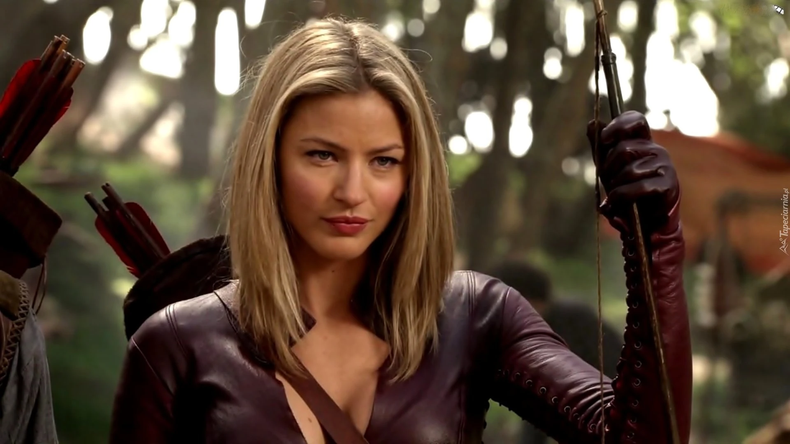

Tabrett Bethell (born 13 May 1981) is an Australian former actress, best known for portraying the character Cara Mason in the television series
Legend of the seeker. Prior to her acting career, she worked as a fashion model from the age of 16, and a cheerleader for the National Rugby League Cronulla Sutherland Sharks
until 2006.
Acting career
After Bethell's early years as a model and cheerleader, she decided to actively pursue acting and trained Screenwise, completing the 12 Months Intensive program in December 2007.
During this training she continued to model; most notably a Neil Grigg race day fascinator resembling the Harbour Bridge
for a February 2007 coveer of The Daily Telegraph. Early acting work included starring as Amy in Campbell Graham's film Anyone You Want, and the role of Chris in Strangers Lovers Killers, released 2010.
Australian thriller The clinic, which was shot in Deniliquin, NSW, Australia in November 2008. In August 2010 Bethell won Best Actress at the Manhattan Film Festival for her role in Anyone You Want.

Personal Information
Bethell is named after a street in Sydney, Tabrett Street, something that resulted when her parents disagreed on what to name her while still at the hospital (her mother wanted "Siobhan", and her father wanted "Murray").
Her father went for a drive, saw the name of the street, and returned to the hospital to suggest it to her mother, who said, "Yes, that's it!".
Her last screen credit was a series regular in the 2016 season of Mistresses.